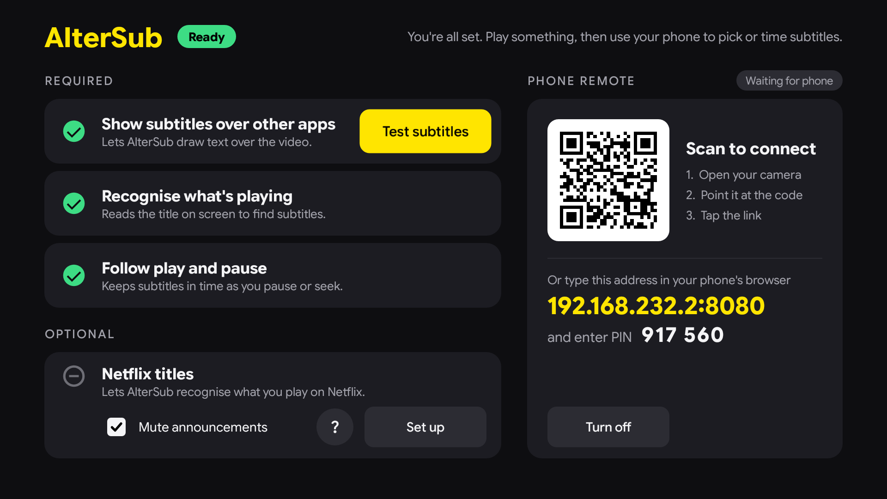
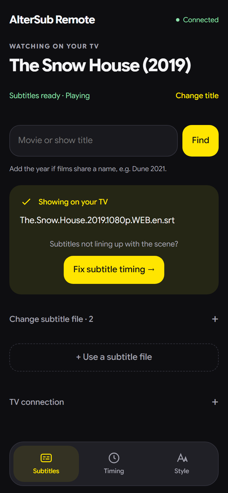
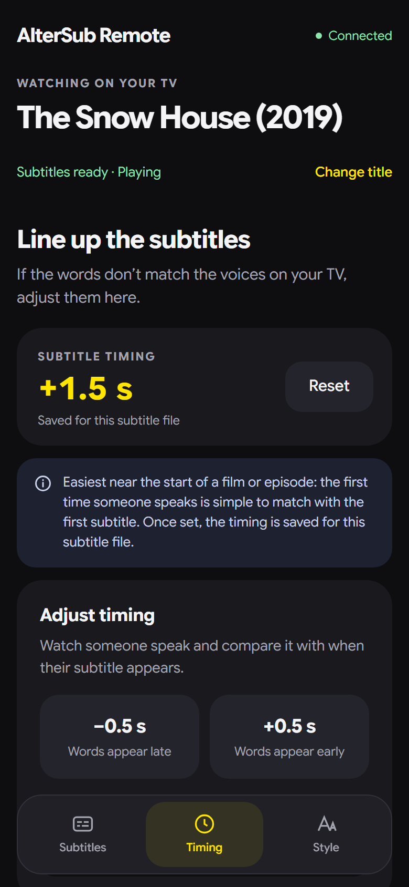
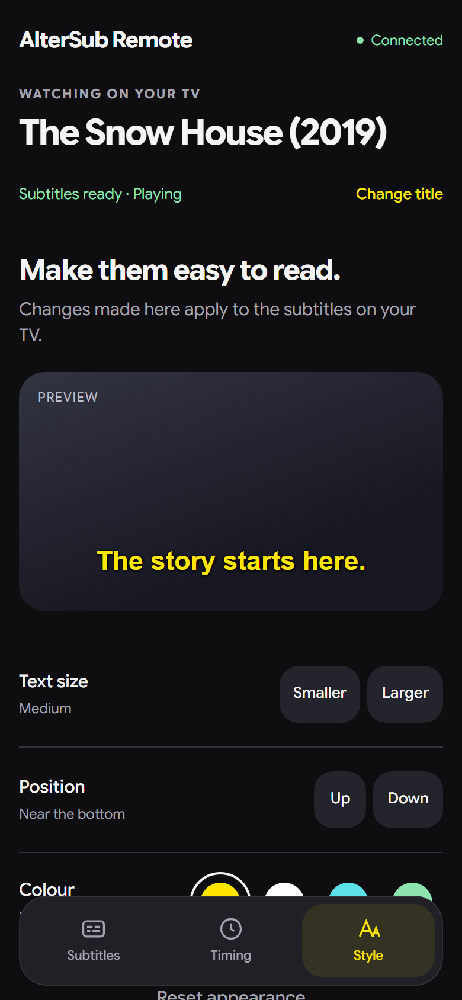

Over any app
AlterSub draws subtitles in a layer on top of the screen, so they work over Netflix, Prime Video, YouTube or your own videos. Your remote keeps controlling the app as usual.
AlterSub is an Android TV app that shows the subtitles you choose on top of what you're watching, keeps them in time as you pause and skip, and lets you pick and adjust them from your phone.

What it does
AlterSub draws subtitles in a layer on top of the screen, so they work over Netflix, Prime Video, YouTube or your own videos. Your remote keeps controlling the app as usual.
It follows play, pause and seek from the app that's playing, so the words stay with the voices. If a file runs early or late, nudge it from your phone once and AlterSub remembers.
Where an app says what's playing, AlterSub picks it up, checks it against a film catalogue and loads subtitles. If two films share a name, it asks which one you mean.
Scan the code on the TV and the remote opens in your phone's browser, with no app to install. Search, switch subtitle files, upload your own, and fix the timing.
The subtitle file and timing you chose are saved for each title, and come back after a restart or when you return to the same film. Recent picks are one tap away.
Built for 1 GB Android TV boxes: under 2 MB to install, about 30 MB of memory, and it rests between subtitle changes instead of redrawing all the time.
Phone remote
The remote is a page served by your TV on your own Wi-Fi. It pairs with a PIN or the TV's QR code, and only one phone can control the TV at a time.



How it works
Put the app on your Android TV (see below).
Allow the three required steps. Each has its own button.
Point your phone's camera at the QR code on the TV to open the remote.
Subtitles load on their own when AlterSub recognises the title. Otherwise, search on your phone.
Setup
There's no download yet, so for now AlterSub is built from its source code and installed from a computer.
git clone https://github.com/deepak-sanaka/AlterSub.git
cd AlterSub
./gradlew assembleDebug
adb connect <TV-IP>:5555
adb install app/build/outputs/apk/debug/app-debug.apkOn Windows, use gradlew.bat instead of ./gradlew.
Open AlterSub on the TV and follow its setup screen. Some TVs hide these settings; if a button can't open them, grant them from the computer instead:
# Show subtitles over other apps
adb shell appops set com.altersub SYSTEM_ALERT_WINDOW allow
# Recognise what's playing
adb shell settings put secure enabled_accessibility_services com.altersub/com.altersub.service.AccessibilityInspectorService
adb shell settings put secure accessibility_enabled 1
# Follow play and pause
adb shell cmd notification allow_listener com.altersub/com.altersub.service.MediaNotificationListenerMany 1–2 GB TVs never allow the last one. On those, run this once instead, then reopen AlterSub:
adb shell pm grant com.altersub android.permission.DUMPGood to know
Netflix doesn't tell other apps what's playing, so search for the title on your phone; AlterSub then remembers your subtitle file and timing for it. An optional setup can also pick up Netflix titles when its menus are in English.
AlterSub searches community subtitle sources such as OpenSubtitles, and you can always use your own .srt or .vtt file from your phone.
No account, no ads and no tracking. The phone remote only works on your own Wi-Fi, after pairing. AlterSub goes online only to look up titles and download subtitles.
AlterSub is an early preview, tested on the Android TV emulator and one real TV so far. Expect rough edges, and check the project on GitHub for what's known.